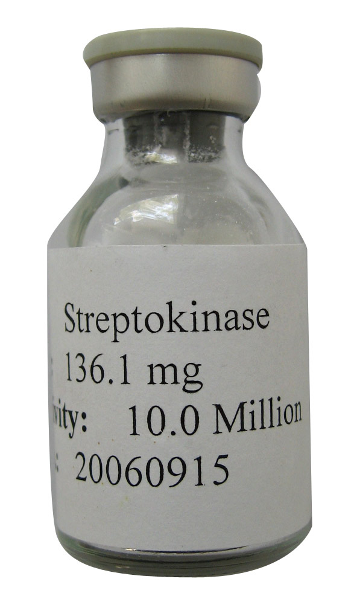

←
Fibrinolíticos
Omegas

Mecanismo de acción
- 1a Generación (No selectivos,
mayor riesgo de sangrado)
Mecanismo: Activan el plasminógeno libre en plasma → fibrinólisis sistémica.
- 2a Generación (Selectivos,
mayor afinidad por la fibrina)
Mecanismo: Activan el plasminógeno dentro
del trombo → menos fibrinolisis sistémica
Ventajas: Mayor eficacia trombolítica, menor
degradación de factores de coagulación.
Menor riesgo de sangrado en comparación con
la primera generación
- 3a Generación de Fibrinolíticos (Optimización genética del rt-PA)
Activan el plasminógeno convirtiéndolo en plasmina, una enzima que degrada la fibrina del coágulo, favoreciendo así la fibrinólisis (disolución del trombo).
Mayor especificidad por la fibrina (actúan más en el sitio del coágulo).
Mayor vida media, lo que permite administración en bolo único.
Menor riesgo de sangrado sistémico comparado con generaciones anteriores
Indicaciones terapéuticas
- 1a Generación (No selectivos,
mayor riesgo de sangrado)
Infarto agudo al miocardio (IAM) con elevación del ST
Embolia pulmonar masiva
Trombosis venosa profunda extensa
Tromboembolismo arterial periférico
- 2a Generación (Selectivos,
mayor afinidad por la fibrina)
Infarto agudo al miocardio
Accidente cerebrovascular isquémico agudo (ACV) dentro de las 4.5 h
Tromboembolismo pulmonar masivo
- 3a Generación de Fibrinolíticos (Optimización genética del rt-PA)
Infarto agudo al miocardio (Tenecteplasa)
ACV isquémico agudo (en investigación y uso restringido)
Contraindicaciones
- 1a Generación
Hemorragia activa o reciente
Antecedentes de hemorragia intracraneal o ictus hemorrágico
Traumatismo o cirugía reciente
Hipertensión grave no controlada
Aneurismas cerebrales
- 2a Generación
Igual que 1ª generación, más:
Uso reciente de anticoagulantes orales con INR elevado
Cirugía mayor reciente
Punción lumbar o arterial reciente
- 3a Generación
Mismas que en generaciones anteriores
Especial cuidado en pacientes >75 años por riesgo de hemorragia cerebral
Vía de administración
- 1a Generación
Polvo liofilizado para reconstituir en solución inyectable IV
- 2a Generación
Polvo para solución inyectable IV (liofilizado)
- 3a Generación
Polvo para solución inyectable IV (liofilizado)
Posología
- 1a Generación
Estreptoquinasa, como ejemplo):
IAM: 1.5 millones de UI IV en 60 minutos
- 2a Generación
(Alteplasa, como ejemplo):
IAM: 100 mg IV en 90 minutos (esquema de acelerado)
ACV: 0.9 mg/kg (máx. 90 mg), 10% en bolo y el resto en 60 minutos
- 3a Generación
(Tenecteplasa, como ejemplo):
IAM: Bolo IV único basado en peso:
- <60 kg: 30 mg
- 60-69 kg: 35 mg
- 70-79 kg: 40 mg
- 80-89 kg: 45 mg
- ≥90 kg: 50 mg
Reacciones adversas
- Generación (No selectivos: mayor riesgo de sangrado
- Sangrado (el más común)
- Reacciones alérgicas (fiebre, escalofríos, rash)
- Hipotensión
- Anafilaxia (estreptoquinasa)
- 2a Generación (Selectivos,mayor afinidad por la fibrina)
- Sangrado intracraneal
- Hemorragia sistémica
- Hipotensión
- Náuseas, vómito
- 3a Generación de Fibrinolíticos (Optimización genética del rt-PA)
- Menor riesgo de sangrado comparado con generaciones anteriores
- Hemorragia
- Reacciones leves en el sitio de inyección
Interacciones medicamentosas
- 1a Generación (No selectivos,mayor riesgo de sangrado)
- Aumento del riesgo de sangrado con anticoagulantes (heparina, warfarina) y AINES
- No combinar con otros fibrinolíticos
- 2a Generación (Selectivos,mayor afinidad por la fibrina)
- Riesgo de sangrado con anticoagulantes y antiplaquetarios
- No usar concomitantemente con otros fibrinolíticos
- 3a Generación de Fibrinolíticos (Optimización genética del rt-PA
- Anticoagulantes y antiagregantes plaquetarios aumentan el riesgo de hemorragia
- No usar con otros trombolíticos simultáneamente
Presentación
- 1a Generación (No selectivos,
mayor riesgo de sangrado)
Estreptocinasa --- Derivada de estreptococos
Urocinasa --- Se obtiene de células renales
humanas.
APSAC (anistreplasa)--- Complejo plasminógeno-
estreptocinasa, con efecto más prolongado
- 2a Generación (Selectivos,
mayor afinidad por la fibrina)
rt-PA (Alteplasa)--- Activador tisular del
plasminógeno recombinante.
- 3a Generación de Fibrinolíticos (Optimización genética del rt-PA)
Tenecteplasa
Reteplasa